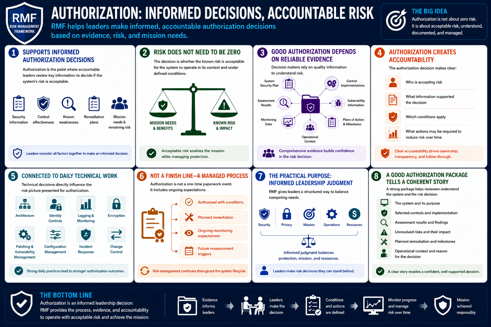

What Is RMF?
Authorization and Risk Decisions
Connecting to LMS... Progress: in progress
Version 1.0 | Date: 2026-06-16 | Educational overview of Risk Management Framework concepts.

Narration
RMF supports informed authorization decisions. Authorization is the point where accountable leaders review security information, control effectiveness, known weaknesses, remediation plans, mission needs, and remaining risk.
The authorizing official or equivalent decision maker does not need every system to be risk free. Instead, the decision is whether the known risk is acceptable for the system to operate in its context and under defined conditions.
Good authorization depends on reliable evidence. System security plans, control implementations, assessment results, vulnerability information, plans of action, monitoring data, and operational context all help decision makers understand risk.
Authorization also creates accountability. It makes clear who is accepting risk, what information supported the decision, which conditions apply, and what actions may be required to reduce risk over time.
For technical teams, authorization is connected to daily work. Architecture decisions, identity controls, logging, encryption, patching, configuration management, incident response, and change control can all affect the risk picture presented for authorization.
Authorization should not be treated as a paperwork finish line. A system may be authorized with conditions, planned remediation, ongoing monitoring expectations, or future reassessment triggers.
The practical purpose is informed leadership judgment. RMF gives leaders a structured way to understand system risk and make decisions that balance security, privacy, mission, operations, and resources.
A good authorization package should therefore tell a coherent story. It should explain the system, the controls, the assessment results, unresolved risks, planned remediation, and the operational reason for the decision.